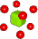
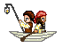
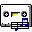

Parimal Satyal 
Salut. I'm Parimal, a designer and occasional writer living in Paris.
I'm interested in communication, languages, cross-cultural exchange, aviation, computer history, information systems and the European Union.
Neustadt.fr is my personal website, a tribute to the creative web of the 90s.
Currently
I am Head of User Experience at Supper, an innovation consultancy in Paris.
Elsewhere, I am also an aspiring private pilot and host of Ground Effect, a podcast about the thrill of learning to fly.
In the process of moving to Berlin and open to opportunities there.
Writing
This is a selection of essays I've written over the years:
- Rediscovering the Small Web,
- Against an Increasingly User-Hostile Web,
- A Beginner's Guide to Crafting a Blog with Metalsmith,
- Teaching Myself German,
- 32c3 - Chaos Communication Congress,
-  Physics in Metal,
-  Island (At Long Last),
- China: One Nation, How Many Languages?,
Talks
The plural in the title is admittedly a bit of an exaggeration; I've so far spoken at one conference of which there is a recording:
Music
I mostly listen to progressive metal, powermetal and old school heavy metal, but also enjoy synthwave and pop music.
I also write and play music:
-  Déconfinement,
- Einstein-Rosen Bridge,
- To Hell with Heaven,
- Navigate the Seas of the Sun,
- The Machine Stops,
- Il était une fois,
- Vita, morte, miracoli,
- In My Life,
- Return of the Ghost,
- Dreams to Illusions,
- Threads of Time,
- Age of Mist,
- Fallen,
Retro Stuff 
I grew up with the internet of the 90s and early 2000s. It was chaotic, irregular, flashy, gaudy, peppered with animated GIFs, but most websites were made by people like you and me who wanted to share their interests and hobbies.
Luckily, I'm not the only one nostalgic about the Geocities era. There's a lot of us! Click the icon below to enter my Retro Collection page full of links to websites, tools, Winamp skins and other cool stuff from the past.
Guestbook
Don't be a stranger. If you have a comment, suggestion or simply want to say hello, you can sign my guestbook. Or read what others have written.

Contact
You can also get in touch with me via email (felix@neustadt.fr), Twitter or Mastodon. Yep, "Parimal" and "Félix" are both me; you can pick the name you like more. Postcards are appreciated if you know my address.
— This website is under construction. Last updated: 23 November 2020.
This website is under construction. Last updated: 23 November 2020. All original text and music on this website are free and in the public domain under the CC0 1.0 Universal license. Download, copy and remix any way you like.
All original text and music on this website are free and in the public domain under the CC0 1.0 Universal license. Download, copy and remix any way you like. Made in France. All pages hand-coded, like in the old days. Valid HTML and CSS.
Made in France. All pages hand-coded, like in the old days. Valid HTML and CSS. Hosted on Neocities. View website source code on GitHub. RSS feed available.
Hosted on Neocities. View website source code on GitHub. RSS feed available.  Best viewed in any browser, including Netscape Navigator, Firefox and lynx.
Best viewed in any browser, including Netscape Navigator, Firefox and lynx.- Part of the Hotline Webring. You can go to Previous or to Next.
 The main font is Barlow by Jeremy Tribby.
The main font is Barlow by Jeremy Tribby.